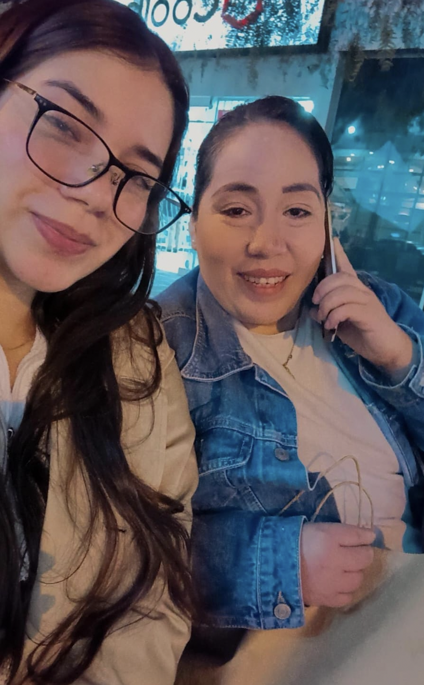
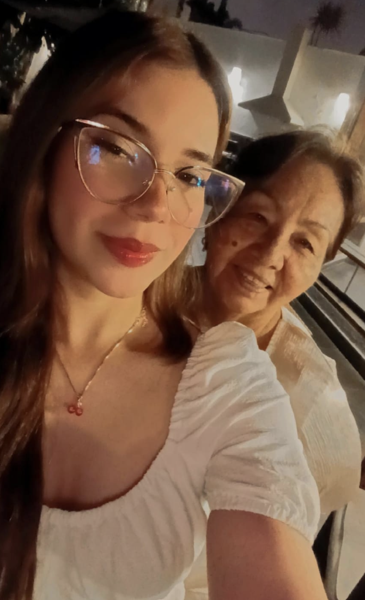
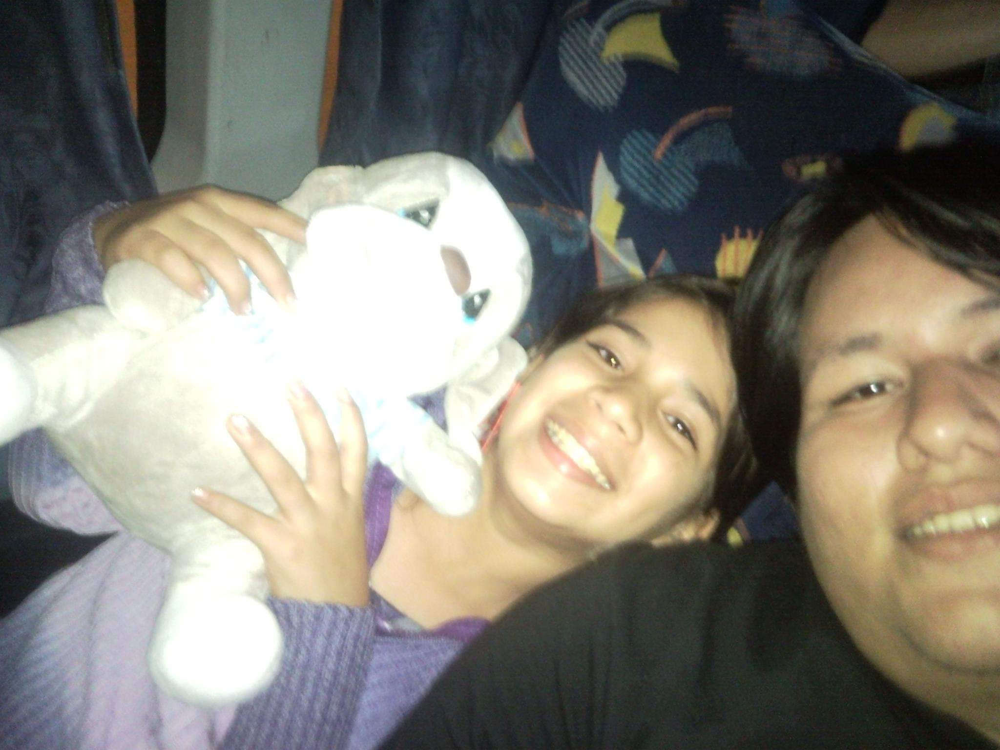

«Nos hiciste, Señor, para ti,
y nuestro corazón está inquieto
hasta que descanse en ti.»
Hola, Sophi. Este encuentro está hecho para situaciones en las que quieras recordar quién eres. Es un encuentro muy especial y el último de los dieciocho. Independientemente el motivo que te trajo hasta aquí, espero que sea de mucha bendición.
Empecemos con una de las preguntas más profundas del cristianismo.
¿Quién eres?
¿Quién eres cuando estás sola en tu cuarto y no hay aplausos ni hay gente mirándote? O aún una pregunta más fundamental, ¿Qué eres?
Aún no respondas.
Esto no es una entrevista de trabajo.
No se responde leyendo un currículum.
Como dicen por ahí: «primero lo primero». En lo que concierne a ti o a mí, ¿qué fue primero?
En definitiva, primero fue Dios pensando en ti, pensando en mí. Amándonos. Deseando nuestra existencia y pensando que sería buena.
Me parece que lo que hace distinto este encuentro de los otros diecisiete es que este no habla de situaciones particulares. Habla de identidad.
Y en la antropología católica, la identidad no nace de cómo me siento, ni tan siquiera de lo que yo podría creer de mí. Sino que nace de la verdad.
Y la verdad sobre una persona la conocen, en diferentes grados, tres miradas:
Probablemente cuando te pregunté «¿Quién eres?» no supiste responder con claridad. Y eso está bien. Para eso está este encuentro.
Quizás pensaste en tu profesión.
En tus errores.
En tus logros.
En tus momentos más difíciles.
En cosas que otros dijeron de ti.
Y en algún sentido es lógico responder por ahí, pero se queda corto ante tan grande pregunta.
Hoy me gustaría invitarte a hacer algo distinto.
Hoy no vas a escuchar mi voz.
Prefiero dejar la voz de personas que estuvieron para ti y te amaron desde antes que nacieras. Probablemente personas que estuvieron para ti sin tener nada que ganar, y cuando nadie los estaba viendo. Personas que conocen prácticamente tu historia completa.
La idea no es descubrir cosas nuevas.
Sino recordar cosas que quizás nos olvidamos.
†
«En boca de dos o tres testigos
quedará firme toda palabra.»

✦
✦
✦Quizás ahora mismo estás pensando «qué lindo lo que dicen de mí» o «ellos me aman».
Y es cierto. Muy cierto.
Pero quiero que veamos algo que es aún más grande.
Ninguna de estas personas inventó tu valor, sino que con amor lo reconocen.
Porque mucho antes de que tu madre alabara tu inteligencia...
Mucho antes de que Yolita alabara tu fortaleza...
Mucho antes de que Sergio alabara tu perseverancia...
Dios ya te había amado.
Y fuiste creada a su imagen y semejanza.
Ellos descubrieron un reflejo.La fuente siempre fue Él.
El Bautismo de Cristo
Dios Padre se complace en su Hijo, Jesús,
pero también en nosotros que, por adopción, también lo somos.
«Miren cuánto amor nos ha tenido el Padre
para llamarnos hijos de Dios,
¡pues lo somos!»
Sophi...
Podría pasar horas diciéndote quién creo que eres.
Pero mi opinión, por mucho que te ame, nunca será la más importante.
Tampoco la de tu mamá.
Ni la de tu abuela.
Ni la de tu primo.
Si algún día todas nuestras voces se apagaran...
seguiría quedando una.
La de Aquel que te creó.
Y mientras Él siga llamándote hija,
nunca tendrás que preguntarte quién eres.
Una oración
†
San Agustín de Hipona
En el nombre del Padre,
del Hijo y del Espíritu Santo.
Haz, Señor,
que te conozca a ti,
para entonces conocerme a mí.
Amén.
Los 18 encuentros iniciaron con el pensamiento más famoso de San Agustín y terminaron con el anhelo más grande de su vida: conocer a Dios.
Espero te sirvan y vuelvas a leerlos cada vez que los necesites.
Con amor,